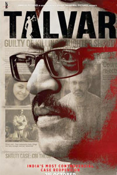
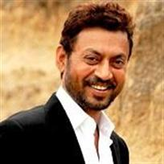
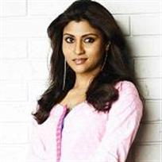
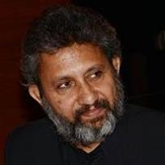

BOOK NOW
TALVAR (U) ( Drama , Suspense ) 84 ♥
Theatrical Trailer
Synopsis
Talvar is a fictional dramatization of true life events revolving around the Arushi Talwar murder case investigation. Known as the Noida Double Murder Case, it happened in the city adjoining India's capital Delhi, in 2008. The incident still resonates in the minds of the public, as there is no sense of closure in the case in spite of a guilty verdict - the parents of the murdered girl have been sentenced to life for killing her.
Boasting of power packed performances by Irrfan Khan, Konkona Sen Sharma and Neeraj Kabi, it also has Tabu in a special appearance. With Gulzar's lyrics, Vishal Bharadwaj's music and cinematography by Pankaj Kumar, the thriller is a work of fiction which is based on one of the most intriguing and talked about murder cases in recent Indian history. Produced by Junglee Picture and VB Pictures, it is written by Vishal Bharadwaj and is directed by Meghna Gulzar.
Director: Meghna Gulzar
Writer: Vishal Bhardwaj
Musician: Vishal Bhardwaj
Lead Cast:
Irfan Khan

Tabu
Konkanna Sen Sharma

Neeraj Kabi
